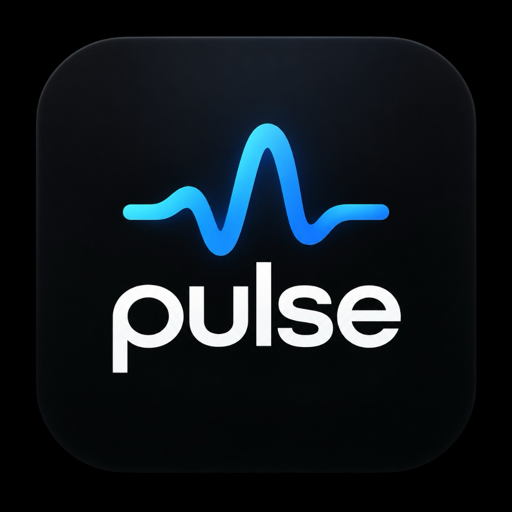
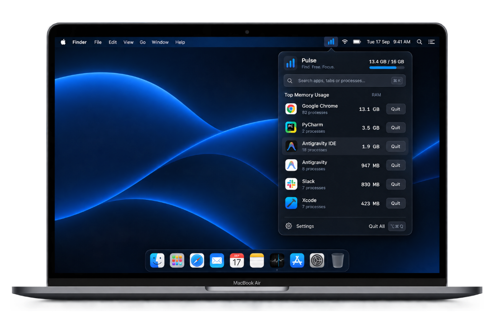

A lightweight memory monitor and command palette for your menu bar. Track real-time memory pressure, inspect runaway processes, and free RAM instantly.

See real-time memory usage and find what's eating your RAM.
Quit unresponsive apps or heavy processes with a single keystroke.
Minimal CPU, zero background noise. Lives quietly in your menu bar.
A clean menu bar app that keeps an eye on your memory, so you can stay focused on what matters.
Control everything from your keyboard.